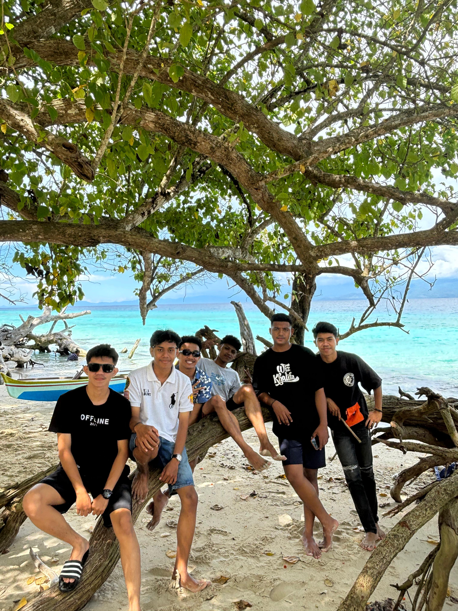
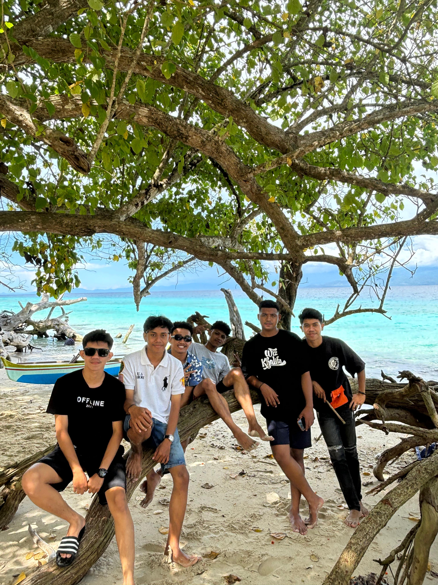
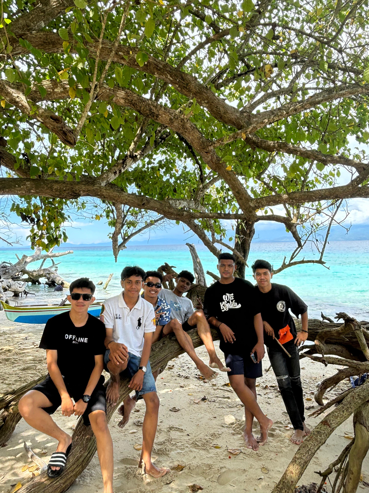

Galeri
 

×

This is My Portofolio Website and simple portofolio but cool
Saya adalah seorang pelajar di Universitas Kristen Indonesia Maluku
Saya Lahir di Kalimantan Barat Tetapi Darah Maluku Yang Mengalir Memanggil Saya Untuk Kembali
Dan saya datang dari sebuah pulau anyo-anyo yaitu Nusalaut
Saya bersemangat menciptakan pengalaman digital yang indah. Dengan pengalaman yang saya dapatkan di kampus, saya memadukan kreativitas dengan keterampilan teknik.
Saya berharap dari pembelajaran pemrograman web ini, saya dapat menjadi seorang yang dapat memanfaatkan digital dengan baik.
